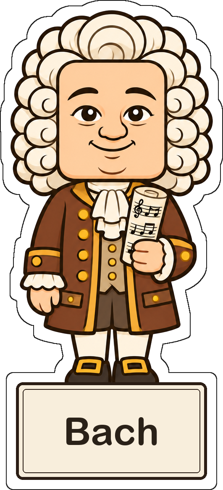

Museu dels Compositors

Hola! Soc La Pauta. Passeja per 6 sales, de l’Edat Mitjana fins avui, i escolta la música de 18 compositors.
Entra al museu →
Hola! Soc La Pauta. Passeja per 6 sales, de l’Edat Mitjana fins avui, i escolta la música de 18 compositors.
Entra al museu →